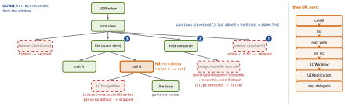

ios-platform · folio
In one line: A touch goes down then up. On touch-down UIKit hit-tests:
hitTest(_:with:) recurses from the window, frontmost subview first, and returns the
deepest view whose point(inside:with:) is true — that view owns the touch for its
whole life. Gesture recognizers on that view and its ancestors see the touch
before the view does. Whatever is not handled — touches, key presses, nil-target
actions — then walks up the responder chain via next.
Download PDF Print view LaTeX source


How it works
- Delivery:
UIApplication.sendEvent→UIWindow.sendEvent. Hit-test once at touch-down;UITouch.viewstays the hit view even if the finger leaves it. The window gives the touch to gesture recognizers first, then to the view. - Skipped by hit-testing:
isHidden,isUserInteractionEnabled = false(default onUILabel,UIImageView— and it disables the whole subtree),alpha< 0.01, and any point outside the view’sbounds— a subview drawn outside its parent is visible but untappable. Transparent pixels still hit: content is not considered. - Bigger tap target (HIG: 44×44 pt): override
point(inside:with:)with an outset rect — but it only works inside every ancestor’s bounds. - Touch methods:
touchesBegan/Moved/Ended/Cancelled. The default implementation forwards up the chain; override withoutsuperand you must override all four. Always handle Cancelled (a recognizer or a call can take the touch). - First responder receives keys, presses, edit-menu actions,
nil-target actions.becomeFirstResponder()needscanBecomeFirstResponderand a window; a text input as first responder brings up the keyboard (inputView,inputAccessoryViewreplace/extend it); dismiss withview.endEditing(true).canPerformAction(_:withSender:)gates edit-menu items;UIKeyCommandfor hardware keys. - Target–action:
UIControldoes not retain its target; aniltarget searches the responder chain.sendAction(_:to:from:for:)withto: nilstarts at the first responder. Closure-basedaddAction(UIAction)(iOS 14) is retained — capture[weak self]. Custom controls:begin/continue/endTracking(_:with:),sendActions(for:).
Gestures — the rules
- States: discrete possible → recognized | failed; continuous possible → began → changed* → ended | cancelled.
- Defaults:
cancelsTouchesInView = true(on recognition the view getstouchesCancelled),delaysTouchesBegan = false(view sees began in parallel),delaysTouchesEnded = true. - Coordination: by default two recognizers do not recognize together.
require(toFail:)— single tap waits for double tap to fail (adds latency). Delegate:gestureRecognizerShouldBegin,shouldRecognizeSimultaneouslyWith,shouldReceive(_ touch:)(ignore touches on controls),shouldRequireFailureOf/shouldBeRequiredToFailBy. - Controls vs an ancestor’s recognizer: the control’s default action (button tap, slider drag) wins; a view can veto with
gestureRecognizerShouldBegin(_:)(UISliderdoes). Scroll view:delaysContentTouches(true);touchesShouldCancel(in:)returnstrueunless the view is aUIControl— override to let a drag that starts on a button still scroll.
Remember
Down by hitTest, recognizers first, up by next. Frontmost first · hidden, disabled, alpha < 0.01, out of bounds → skipped.
Example — hit-testing, written out
// what the default does (a sketch of the documented rules)
override func hitTest(_ p: CGPoint, with e: UIEvent?) -> UIView? {
guard !isHidden, isUserInteractionEnabled, alpha >= 0.01,
point(inside: p, with: e) else { return nil }
for sub in subviews.reversed() { // frontmost first
if let hit = sub.hitTest(sub.convert(p, from: self), with: e) {
return hit } }
return self }
// 1 bigger tap area (still clipped by every ancestor's bounds)
override func point(inside p: CGPoint, with e: UIEvent?) -> Bool {
bounds.insetBy(dx: -12, dy: -12).contains(p) }
// 2 pass-through overlay: its subviews get taps, empty areas don't
override func hitTest(_ p: CGPoint, with e: UIEvent?) -> UIView? {
let v = super.hitTest(p, with: e); return v === self ? nil : v }Custom view-controller transitions
- Modal:
vc.transitioningDelegate(weak — keep it alive) vends the animator (animationController(forPresented:…));.customstyle + aUIPresentationControllerfor dimming and frame. Push/pop: theUINavigationControllerDelegateanimationControllerFor:from:to:method. - Animator =
UIViewControllerAnimatedTransitioning:transitionDuration(using:)+animateTransition(using:)— add thetoview toctx.containerView, animate, then alwaysctx.completeTransition(!ctx.transitionWasCancelled); forget it and the UI stays frozen.interruptibleAnimator(using:)returns aUIViewPropertyAnimator. - Interactive: return a
UIPercentDrivenInteractiveTransitionfrominteractionControllerFor…only while a gesture drives it; the pan callsupdate(%), thenfinish()orcancel()by progress + velocity. - iOS 18:
preferredTransition = .zoom { _ in thumb }— system zoom, interactive throughout.
Traps
- Tap gesture on
UIImageView/UILabelnever fires — interaction is off by default. - Badge / button sticking out of its superview: drawn, never tappable.
- “Dismiss keyboard” tap recognizer on the root view kills
didSelectRowAt— setcancelsTouchesInView = false. - A clear full-screen view with alpha 1 on top swallows every touch.
transitioningDelegateis weak; nocompleteTransition→ frozen UI.